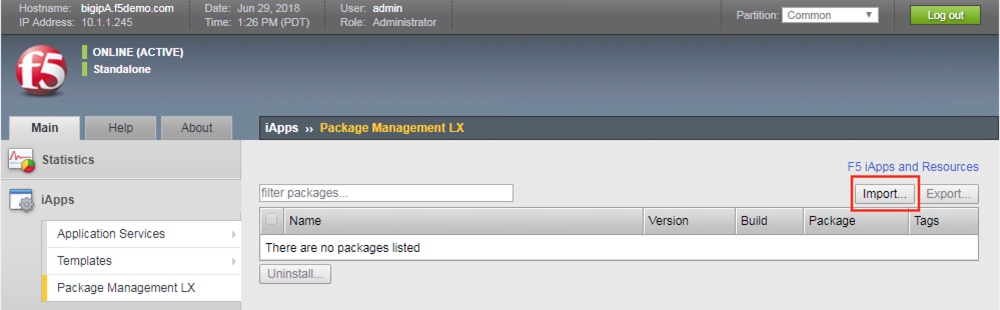
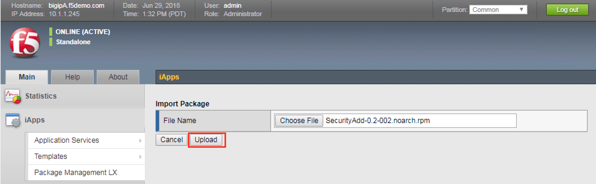

Lab 6.2 - Run playbook to create ASM policy and associate with virtual server¶
In this lesson we will use Ansible to deploy a new ASM policy and attach that policy to an existing virtual server.
Task 1 - Run playbook from the Ubuntu host¶
On your Xubuntu host you should be at a prompt that looks like this:
external_user@xubuntu-vm:~/f5-ansible$You should be in the “f5-ansible” directory.
At the prompt type the following:
ansible-playbook playbooks/ASM_create_apply.ymlOnce you execute the above command you will see the playbook executing, you’ll be able to view each task executing and the status of each task. The last two lines will give you a summary of the playbook execution and will indicate if it was ok or failed. The playbook will take up to 30 seconds to complete. Also note you will see some comments about some
DEPRECATION WARNINGmessages, this can be ignored for this lab.Note
If you wish To view the contents of the playbook you can use the following command
cat playbooks/ASM_create_apply.ymlFirst lets look to see if an ASM policy has been created, it should have the name
iControlLX_Agility2018_Ansible. Navigate to Main > Security > Application Security > Security Policies to view the ASM policies.Now lets look at the virtual server to see if the policy has been associated. Navigate to Main > Local Traffic > Virtual Server > Virtual Server List then select
hackazon_virtual. Once selected navigate to Security > Policies.Congrats you’ve now created an ASM policy and associated it with a virtual server all in one step!!
{kind=link}
{kind=link}